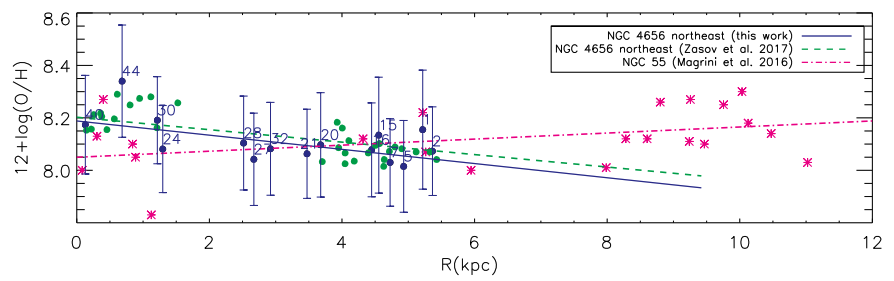

My Research
Simulated [CII] emission in high-z star-forming galaxies
My research focuses on understanding high-redshift galaxy formation and evolution, with particular emphasis on the circumgalactic gas and its link with galaxy properties.
I have worked at the interface between observations and simulations. Using simulations, I predicted [CII] emission levels on halo scales of z~4–6 star-forming galaxies.
 View publication →
View publication →
Molecular gas reservoirs associated with z~3 quasars
The discovery of extended Lyman-alpha nebulae around high-redshift quasars opened the study of halo gas around massive systems.
With observations, I constrained the molecular gas reservoirs in quasars’ host galaxies at z~3 and explored their connection to extended Lyα emission.
 View publication →
View publication →
Kinematics and physical properties of nearby galaxies
During my master's studies, I performed a spectroscopic and kinematic analysis of a nearby interacting system of galaxies, determining their main physical properties.

View publication →